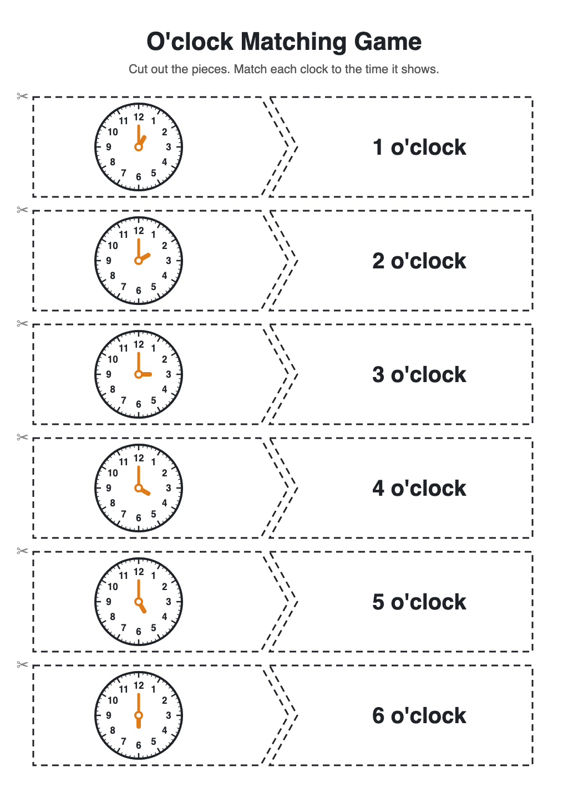
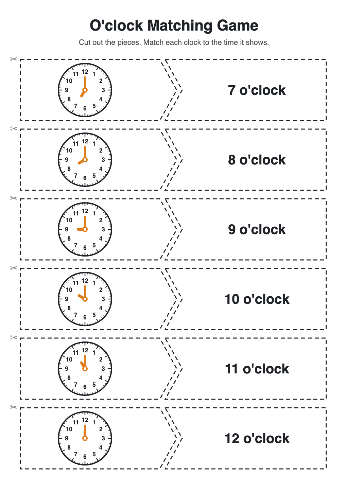
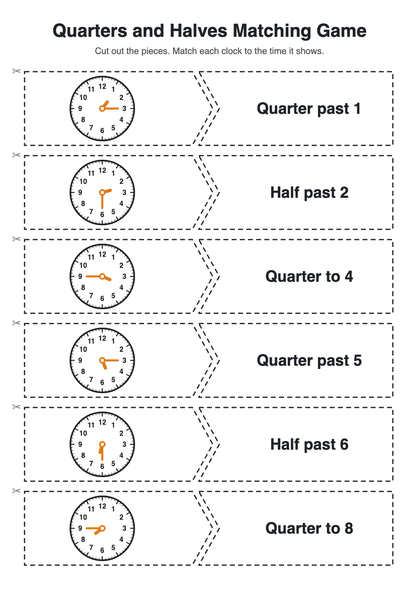
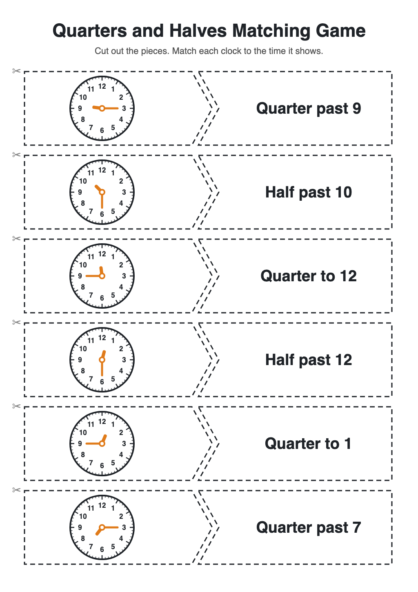

O'clock Matching Game
A cut-and-match activity for students who finish early. Twelve o'clock pairs across two sheets, plus a harder set of twelve with quarters and halves.
Objective: Reading o'clock, quarter past, half past and quarter to on an analog clock and matching each to the time in words
-
Sheet 1: 1 o'clock to 6 o'clock

Download sheet 1
-
Sheet 2: 7 o'clock to 12 o'clock

Download sheet 2
-
Harder set, sheet 1: quarters and halves

For students who have mastered o'clock. Mixes quarter past, half past and quarter to.
Download harder sheet 1
-
Harder set, sheet 2: quarters and halves

Includes quarter to 12 and quarter to 1, where the hour hand sits just before the 12 or the 1.
Download harder sheet 2
-
How to use it
- Print both sheets, ideally on card. Cut along the dashed lines so each row becomes two pieces: a clock and a time.
- Mix all 24 pieces up. Students match each clock to its time. The pointed tab fits the notch, so matched pairs sit together.
- For a quicker version, hand out only sheet 1. For a challenge, time them, or have them order the matched pairs from 1 o'clock to 12 o'clock.
- Once o'clock is easy, move on to the harder set. Keep the two sets in separate bags so the pieces don't mix.
Keep a set in a zip bag for early finishers.
{kind=link}
{kind=link}
{kind=link}
{kind=link}